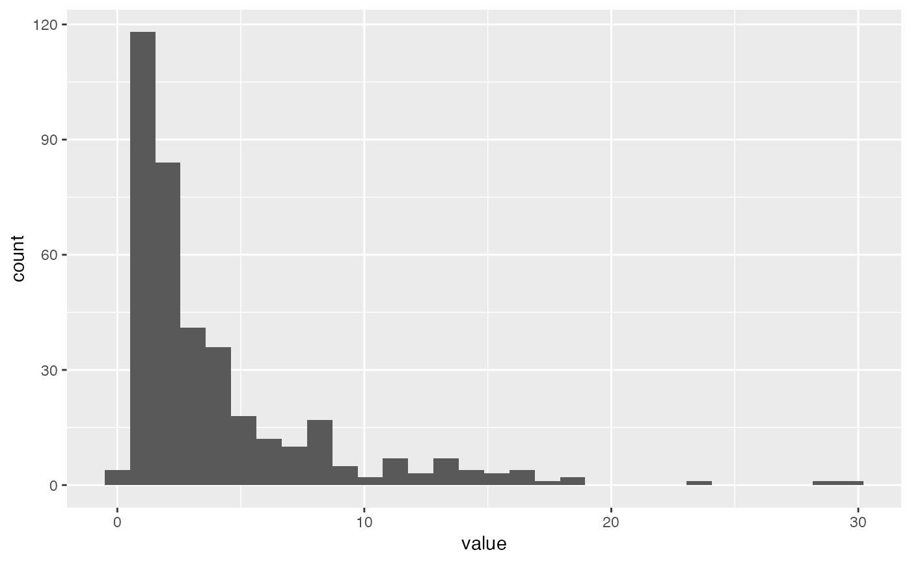

Compute Mahalanobis distances between all pairs of observations
Source:R/multivariate.R
calc_mv_dist.RdFor a data matrix, compute the sample variance-covariance, which is used to compute the Mahalanobis distance.
Examples
require(ggplot2)
require(tibble)
#> Loading required package: tibble
data(aflw)
aflw_std <- apply(aflw[,7:35], 2, function(x)
(x-mean(x, na.rm=TRUE))/
sd(x, na.rm=TRUE))
d <- calc_mv_dist(aflw_std[,c("goals","behinds",
"kicks","disposals")])
d <- as_tibble(d, .name_repair="minimal")
ggplot(d, aes(x=value)) + geom_histogram()
#> `stat_bin()` using `bins = 30`. Pick better value with `binwidth`.
